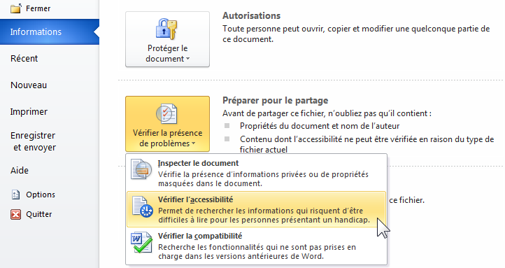
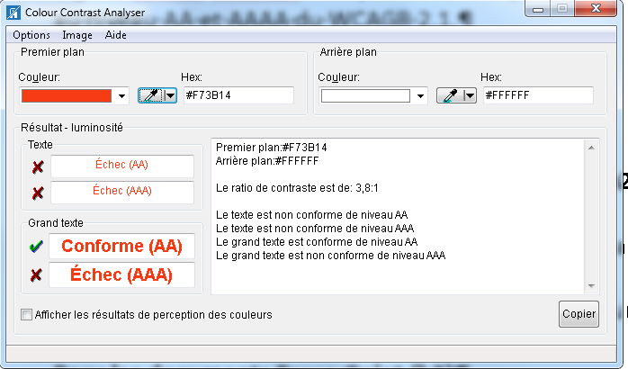

Comment tester l'accessibilité d'un documents Word
Tests automatiques
Vous pouvez commencer vos tests avec l’outil de vérification de l’accessibilité de Microsoft Office.
Fichier > Vérifier la présence de problèmes > Vérifier l’accessibilité

Important : si vous n’avez pas l’option « Vérifier l’accessibilité » dans le document ouvert, faites la manipulation suivante pour la rendre active : enregistrez votre document depuis une version d’Office supérieure (ou égale) à 2010 et au format ".docx" avec la case « compatibilité avec les versions précédentes » décochée.
Vérifications des contrastes de couleurs
Le logiciel Colour Contrast Analyser indique si les contrastes de couleurs utilisés sont conformes.

Tests avec les synthèses vocales JAWS et NVDA
Afin de poursuivre vos vérifications, vous pouvez tester avec une synthèse vocale. Ces tests permettent de naviguer dans la même configuration que les personnes malvoyantes et non-voyantes.
Apprendre la navigation vocale avec JAWS 2018 et NVDA 2018
Autres tests manuels
Les grilles suivantes au format Excel permettant de vérifier l’accessibilité de vos documents Word et PowerPoint :
- Grille d'évaluation Word (16 Ko)
- Grille d'évaluation PowerPoint (16 Ko)